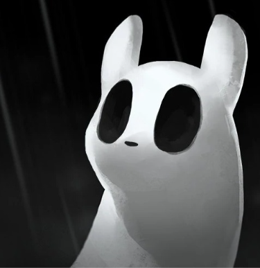
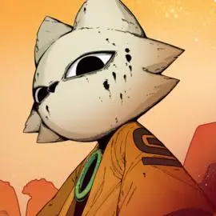
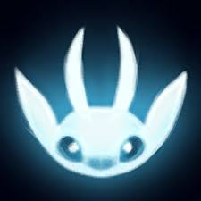
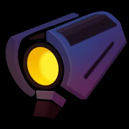
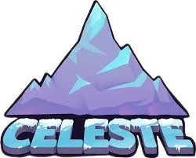

| Ícono |
Nombre |
Descripción |
Aspectos del juego |
|  |
Rain World |
Es un juego de supervivencia y exploración en un mundo post-apocalíptico, lleno de criaturas hostiles. Cada cierto tiempo caerá una lluvia devastadora haciendo que la vida sea casi imposible. Será imprescindible conseguir comida durante el ciclo para lograr hibernar, de esta manera evitaremos la lluvia y conseguiremos avanzar un nivel de karma, necesario para progresar. |
- Jugabilidad: Es un juego difícil, los controles son complicados al principio pero con el tiempo es posible acostumbrarse. No es amigable para los jugadores nuevos y se requiere muchisima paciencia para progresar, sin contar con que la penalización por morir es extremadamente alta. Aún así es muy divertido cuando entiendes como funciona tu entorno. 8/10
- Historia: Rain World tiene una historia increíble, pero peca de ser muy críptica y complicada de entender en un principio. El juego es bastante hostil para contar la historia mediante perlas y broadcasts. 7/10
- Arte: Es un juego pixel art pero que mantiene un gran nivel de detalle en cuanto a las animaciones, además que el juego contiene artworks muy bonitos que suelen aparecer durante las campañas y al seleccionar cada una (dicho artwork cambia conforme avanzamos en la campaña). 10/10
|
|  |
Nine Sols |
Inspirado en Sekiro: Shadows Die Twice, Nine Sols es un juego souls-like metroidvannia donde exploras un mundo futurista que está conformado por 2 razas: Los Sols y los Primates. Los Sols fueron los que en un principio gobernaron el reino, y los Primates son los humanos que habitaron el reino de Panglai. |
- Jugabilidad: Nine Sols se enfoca, principalmente, en el parry. Una mecánica que requiere timing pero con práctica es simple de dominar (y satisfactoria), es muy importante aprender a hacer parry ya que facilitará mucho las peleas contra los jefes (de hecho, es hasta obligatorio para muchos jefes). Al ser un metroidvannia habrá bastante backtracking. 9/10
- Historia: La historia de este juego es increíble, tiene una trama sumamente interesante, y el juego la desarrolla bastante bien. Si prestas atención al detalle lograrás entender gran parte o toda la historia del juego, no tiene desperdicio alguno. 10/10
- Arte: Tiene un estilo de animación hecho a mano, se presentan varios mapas y cada uno de ellos tiene una ambientación muy bien lograda. 9/10
|
|  |
Ori (The Blind Forest & Will of the Wisps) |
La saga de Ori consta de 2 entregas espectaculares. Es un juego metroidvannia en el que controlamos un espíritu de luz llamado Ori, cuya misión principal era ser al guardian del bosque. Pero un problema ha sucedido y el mundo se vió sucumbido en una catástrofe y es nuestra misión restaurar el equilibro entre los elementos. |
- Jugabilidad: Ambas entregas tienen una jugabilidad muy cómoda y fluída, presentándose un árbol de habilidades que usaremos para hacernos mas fuertes. En la segunda entrega tenemos distintas armas a elección para combatir con las distintas amenazas que se presentarán. 8/10
- Historia: La historia de la franquicia es una de mis favoritas, es muy emotiva y la forma de contarla es mediante cinemáticas ya que el juego apenas presenta dialogos, aún así se logra comprender la historia a la perfección. 10/10
- Arte: El estilo artistico de Ori es de los mejores de la industria indie. Se presentan muchos entornos muy bien pulidos al detalle y diferenciandose extremadamente bien entre ellos. 10/10
|
|
Hollow Knight |
Es un juego que, para muchos, ha revivido el género Metroidvannia de la mejor manera. Tomamos el control de un caballero hueco que, después de mucho tiempo, vuelve a su reino de origen (Hallownest) porque sintió un llamado, al llegar se encuentra con un reino desolado y destruido, sucumbido por una infección. Es nuestra misión descubrir que ha pasado y accionar en base a ello. |
- Jugabilidad: Al ser un metroidvannia, es muy importante explorar todo lo que se pueda, conseguir nuevas habilidades conforme vamos avanzando y hacernos mas fuerte consiguiendo amuletos, comprando muescas para esos amuletos, mejorando el aguijón, entre otras cosas. Es un juego desafiante y lleno de jefes carismáticos. 8/10
- Historia: Al igual que Rain World, la historia de Hollow Knight es muy buena y está bien construída, pero tambien peca de lo mismo: Es muy críptica y dificil de comprender. 7/10
- Arte: El arte de Hollow Knight es sencillamente hermoso. Se logra una ambientación sombría en todo el reino y transmite la tristeza del mismo con total éxito. 10/10
|
 |
The Binding of Isaac: Rebirth |
Inspirado en la conocida historia bíblica de Isaac, hijo de Abraham. The Binding of Isaac es un juego roguelike, nos pone en el papel de Isaac, cuya madre fue influenciada por una voz que la ordenaba matar a su hijo. Isaac, asustado, se esconde en su cuarto para luego terminar en un sótano y más tarde dentro de un cofre, donde se imagina todas las aventuras que suceden durante el juego. |
- Jugabilidad: TBOI cuenta con un sistema de progresión muy bien definido y conectado, al ser un juego roguelike cada partida es diferente y al morir debemos comenzar nuevamente otra run. Los controles me resultaron incómodos en un principio pero con el tiempo me he podido acostumbrar. Aunque la mayor parte del tiempo el juego puede ser muy injusto al no darte items buenos o al salirte jefes muy complicados a juego temprano, por lo que puede ser muy frustante en varias ocasiones. 8/10
- Historia: La historia de Isaac está muy bien contada, además, todo el gameplay está fuertemente relacionado con la historia. Todo lo que sucede cobra sentido cuando conoces el lore del juego. 10/10
- Arte: Mantiene un estilo pixel art, aunque es posible aplicar un filtro en las opciones del juego para suavizar las texturas. Los enemigos son, estéticamente, feos en su mayoria lo cual cobra sentido al saber que son los miedos de Isaac. 7/10
|
|  |
Ultrakill |
En Ultrakill controlamos a una máquina, V1, creada para matar y usar la sangre de sus enemigos para curarse. Durante el juego estamos descendiendo por las distintas capas del Infierno. Está inspirado en "La Divina Comedia" de Dante Alighieri, donde se presenta al Infierno como un lugar divido en 9 círculos o capas, los cuales son los siguientes:
- Limbo
- Lujuria
- Gula
- Codicia
- Ira
- Herejía
- Violencia
- Fraude
- Traición
El juego se encuentra actualmente en desarrollo, sin embargo las primeras 7 capas están presentes, teniendo a la capa 8 (Fraude) a punto de llegar.
|
- Jugabilidad: Ultrakill tiene 2 características clave: La sangre es combustible, y TODO es parryable (En realidad hay algunas cosas que no lo son, pero son pocas). Es un estilo de juego frenético, similar a Doom, teniendo una banda sonora sumamente buena de fondo. 10/10
- Historia: La historia de Ultrakill es impresionante, es un juego cargado de lore. El juego cuenta la historia mediante textos muy largos, sin embargo considero que es muy buena y vale la pena hecharle un ojo. 8/10
- Arte: El juego tiene gráficos viejos como si fuera de PS2, pero tiene una explicación en el lore ya que así es como V1 ve el infierno desde sus ojos. Además, cada capa tiene su estilo único y son muy reconocibles entre sí. 8/10
|
|  |
Celeste |
Un juego plataformero, enfocado en el parkour. Nos ponemos en los zapatos de Madeline mientras ascendemos una montaña. En el camino vamos conociendo distintos personajes, y deberemos lidiar con nuestros propios problemas personales a lo largo del camino |
- Jugabilidad: Las mecánicas de Celeste son, en un principio, simples. Pero a medida que avanzamos se irán complicando más y más, hasta el punto de necesitar aprender a usar ciertas mecánicas que serán obligatorias para avanzar por ciertos mapas (como lo es el wave dash en Farewell). Sin embargo es muy satisfactorio completar secciones usando lo aprendido anteriormente. 9/10
- Historia: Una narrativa simple, bien contada y emotiva. Es un juego que se enfoca en la superación personal y la autoestima. 10/10
- Arte: Estilo pixelado, aunque tiene artworks hechos a mano y que son muy bonitos. 8/10
|